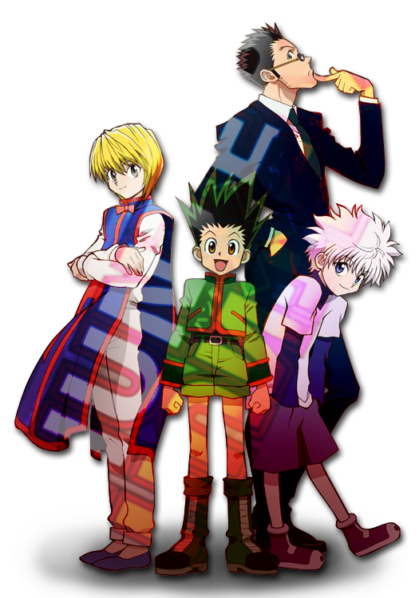
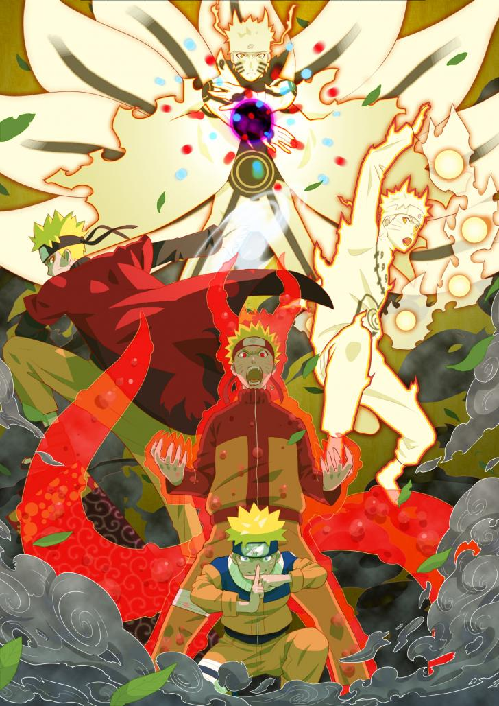
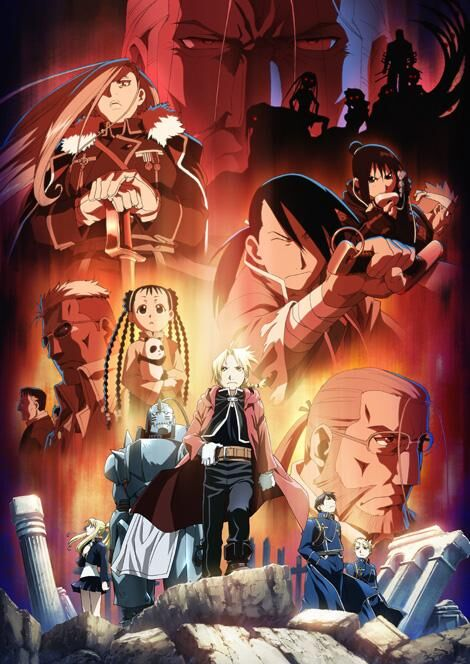

Con las etiquetas src de los elementos img debajo vamos a llamar a imágenes que tenemos en nuestra carpeta img dentro de nuestra carpeta assets.
Hunter X Hunter
Doce años antes del inicio de la historia, Ging Freecss abandonó a su hijo Gon en manos de su tía Mito en Isla Ballena. Gon, quien siempre creyó que sus padres habían muerto, descubre un día gracias al aprendiz de su padre, Kite, que este aún se encuentra con vida y se ha convertido en uno de los mejores cazadores, individuos de élite y acreditados para el rastreo de tesoros secretos, bestias exóticas e, incluso, otros individuos. Motivado por esta revelación, Gon decide dejar su hogar y presentarse al examen de cazador, una serie de desafíos que buscan probar las habilidades, supervivencia y trabajo en equipo de sus participantes.

Naruto Shippuden
Naruto, un aprendiz de ninja de la Aldea Oculta de Konoha es un chico travieso que desea llegar a ser el Hokage de la aldea para demostrar a todos lo que vale. Lo que descubre al inicio de la historia es que la gente le mira con desconfianza porque ver Naruto audio Latino en su interior está encerrado el demonio Kyubi que una vez destruyó la aldea, y que el anterior líder de la misma tuvo que encerrar ver Naruto audio Latino en su cuerpo siendo aún muy pequeño, a coste de su vida. Aunque sus compañeros no saben esto, tampoco le aprecian porque es mal estudiante y siempre está haciendo bromas.
Sin embargo, la forma de actuar y la determinación de Naruto demuestran a los demás que puede llegar muy lejos, y el recelo de los otros chicos se va disipando. Naruto y sus compañeros Sakura y Sasuke, junto a su maestro Kakashi tendrán que enfrentarse a una anime serie de combates y misiones a lo largo de la historia que les permitirán mejorar y crecer.

Full Metal Alchemist Brotherhood
Este anime nos cuenta la historia de los hermanos Edward (15 años) y Alphonse (14), quienes después de la muerte de su madre (cuando tenían la tierna edad que podéis ver en el gif superior), rompieron el mayor tabú de la alquimia al querer resucitarla: la transmutación humana.
